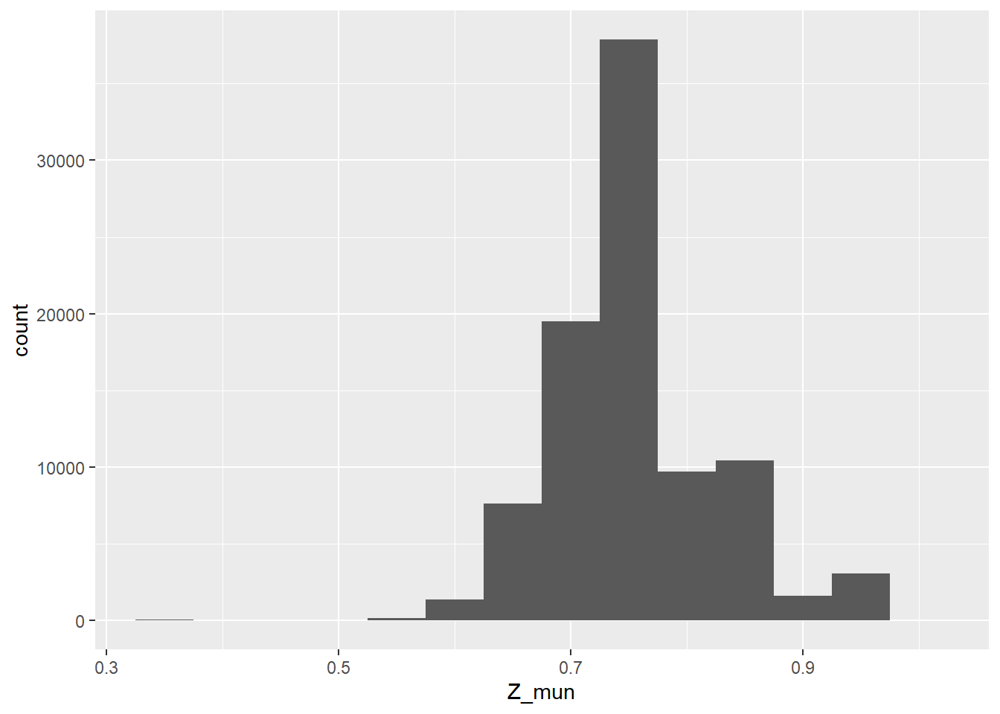
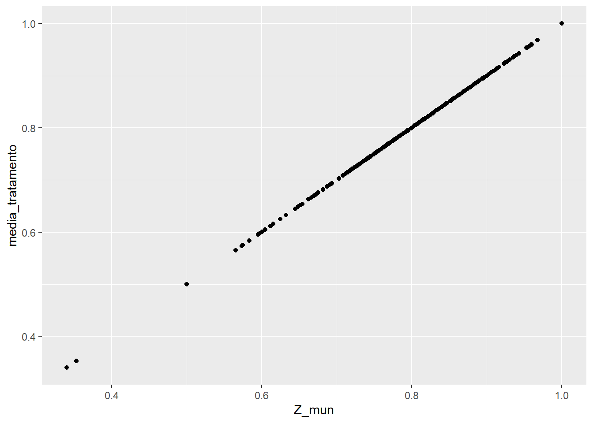

# carregando os pacotes
library(microdatasus)
library(dplyr)
library(ggplot2)
library(AER)
# lendo os dados
data <- fetch_datasus(
year_start = 2023, month_start = 1, year_end = 2023, month_end = 12,
information_system = "SINASC", uf = "GO"
)Resolução da lista 6
Curso de inferência causal
Seção I - Preparação dos dados e construção do instrumento
1. Carregamento e construção do instrumento municipal
- Seleção das colunas necessárias, de acordo com a referência e criação da variável de tratamento
pre_natal_adequado.
s_data <- data |>
select(PESO, IDADEMAE, ESCMAE, CONSULTAS, GESTACAO, CODMUNRES) |>
mutate(
peso = as.numeric(PESO),
idade_mae = as.numeric(IDADEMAE),
escolaridade_mae_numerico = as.numeric(ESCMAE),
escolaridade_mae = factor(
ESCMAE,
levels = c('1', '2', '3', '4', '5', '9'),
labels = c('Nenhuma', '1-3', '4-7', '8-11','12+', 'ignorado'),
# ordered = TRUE
),
consultas = as.numeric(CONSULTAS),
consultas_factor = factor(
CONSULTAS,
levels = c('1', '2', '3', '4', '9'),
labels = c('Nenhuma', '1-3', '4-6', '7+', 'ignorado'),
ordered = TRUE
),
semanas_gestacao = factor(
GESTACAO,
levels = c('1', '2', '3', '4', '5', '6', '9'),
labels = c('menos 22', '22-27', '28-31', '32-36', '37-41', '42+', 'ignorado')
),
codigo_municipio = CODMUNRES
) |>
select(peso, idade_mae, escolaridade_mae_numerico, escolaridade_mae, consultas, consultas_factor, semanas_gestacao, codigo_municipio) |>
na.omit() |>
# removendo as colunas marcadas como 'ignorado'
filter(consultas != 9 & escolaridade_mae != 'ignorado') |>
# criando a variável de tratamento
mutate(
pre_natal_adequado = ifelse(consultas == 4, 1, 0)
)t_data <- s_data |>
group_by(codigo_municipio) |>
mutate(
Z_mun = mean(pre_natal_adequado, na.rm = TRUE)
)
# quantidade de municípios distintos
length(unique(t_data$codigo_municipio))[1] 247# distribuição do instrumento
summary(t_data$Z_mun) Min. 1st Qu. Median Mean 3rd Qu. Max.
0.3400 0.7149 0.7627 0.7578 0.7826 1.0000 # desvio padrão do instrumento
sd(t_data$Z_mun)[1] 0.06921152histograma <- t_data |>
ggplot() +
aes(x = Z_mun) +
geom_histogram(binwidth = 0.05)
histograma
Existem municípios com cobertura muito baixa,configurando um outlier em torno de 0.3. Também existem municípios com cobertura muita alta, em 100%. A maioria dos valores, no entanto, está por volta de 0.75. Essa heterogeneidade pode se dar por diversos motivos, como se o município é urbano ou rural, o alcance dos serviços de saúde, a quantidade de mulheres grávidas em cada local etc.
2. Verificação do primeiro estágio
primeiro_estagio <- lm(pre_natal_adequado ~ Z_mun + escolaridade_mae + idade_mae, data = t_data)
summary(primeiro_estagio)
Call:
lm(formula = pre_natal_adequado ~ Z_mun + escolaridade_mae +
idade_mae, data = t_data)
Residuals:
Min 1Q Median 3Q Max
-1.16436 -0.02661 0.17633 0.27986 0.72471
Coefficients:
Estimate Std. Error t value Pr(>|t|)
(Intercept) -0.3766544 0.0563979 -6.679 2.43e-11 ***
Z_mun 0.9482395 0.0197848 47.928 < 2e-16 ***
escolaridade_mae1-3 0.0320235 0.0572381 0.559 0.575837
escolaridade_mae4-7 0.0660025 0.0540950 1.220 0.222422
escolaridade_mae8-11 0.2029766 0.0538780 3.767 0.000165 ***
escolaridade_mae12+ 0.3094454 0.0538922 5.742 9.39e-09 ***
idade_mae 0.0070315 0.0002225 31.600 < 2e-16 ***
---
Signif. codes: 0 '***' 0.001 '**' 0.01 '*' 0.05 '.' 0.1 ' ' 1
Residual standard error: 0.4135 on 91449 degrees of freedom
Multiple R-squared: 0.06857, Adjusted R-squared: 0.06851
F-statistic: 1122 on 6 and 91449 DF, p-value: < 2.2e-16No primeiro estágio, o coeficiente do instrumento nos diz o impacto do instrumento no tratamento. Nesse caso, o coeficiente \(\beta = 0.95\), estatisticamente significativo (p << 0.05), nos diz que a relação entre entre instrumento e tratamento é positiva e que cada unidade de aumento do instrumento aumenta em 0.95 o tratamento (ou que o aumento de 1% no intrumento, aumenta o tratamento em 0.0095 o tratamento, que é dummy). A estatística F é de 1122, passando tanto no critério histórico de F > 10 quanto no critério de Lee at al. Isso mostra que nosso instrumento é forte.
- É esperado ver uma linha perfeitamente linear, visto que a variável de instrumento Z_mun é justamente a média do tratamento (mães com pré natal adequado) por município.
data_munic <- t_data |>
group_by(codigo_municipio) |>
mutate(
media_tratamento = mean(pre_natal_adequado)
)
dispersao <- data_munic |> ggplot() + aes(x = Z_mun, y = media_tratamento) + geom_point()
dispersao
- Um primeiro estágio fraco implicaria um instrumento fraco. Usando a fórmula com F = 2, o viés tenderia a \(\frac{\sigma_{v\varepsilon}}{\sigma_{\eta}^2} * \frac{1}{3}\), que é um terço do viés do MQO, herdado pelo intrumento.
Seção II - Estimação de IV e Comparação com MQO
3. Forma reduzida e razão de Wald
forma_reduzida <- lm(peso ~ Z_mun + escolaridade_mae + idade_mae, data = t_data)
summary(forma_reduzida)
Call:
lm(formula = peso ~ Z_mun + escolaridade_mae + idade_mae, data = t_data)
Residuals:
Min 1Q Median 3Q Max
-2964.1 -267.4 39.3 332.1 3451.4
Coefficients:
Estimate Std. Error t value Pr(>|t|)
(Intercept) 2852.4748 73.5899 38.762 < 2e-16 ***
Z_mun 13.6523 25.8159 0.529 0.59692
escolaridade_mae1-3 142.6103 74.6863 1.909 0.05621 .
escolaridade_mae4-7 146.8625 70.5850 2.081 0.03747 *
escolaridade_mae8-11 204.8889 70.3019 2.914 0.00356 **
escolaridade_mae12+ 191.5981 70.3205 2.725 0.00644 **
idade_mae 1.8572 0.2903 6.396 1.6e-10 ***
---
Signif. codes: 0 '***' 0.001 '**' 0.01 '*' 0.05 '.' 0.1 ' ' 1
Residual standard error: 539.5 on 91449 degrees of freedom
Multiple R-squared: 0.001244, Adjusted R-squared: 0.001178
F-statistic: 18.98 on 6 and 91449 DF, p-value: < 2.2e-16O coeficiente do instrumento na forma reduzida nos diz o impacto do instrumento na variável resposta. Nesse caso, o coeficiente \(\beta = 13.65\), que não é estatisticamente significativo (p > 0.05), nos diz que a relação entre entre instrumento e resultado é positiva e que cada unidade de aumento do instrumento aumenta em 13.65g o peso ao nascer (resultado).
A razão de Wald é dada por
wald = forma_reduzida$coefficients["Z_mun"][[1]]/primeiro_estagio$coefficients["Z_mun"][[1]]
wald[1] 14.39757Já o coeficiente de tratamento no MQO é dado por
regressao_simples = lm(peso ~ pre_natal_adequado + escolaridade_mae + idade_mae, data = t_data)
regressao_simples$coefficients["pre_natal_adequado"][[1]][1] 169.3126A razão de Wald é muito menor.
d0 <- t_data |> filter(pre_natal_adequado == 0)
d1 <- t_data |> filter(pre_natal_adequado == 1)
sdo <- mean(d1$peso) - mean(d0$peso)
sdo[1] 167.4577A razão de Wald é bem menor que o SDO observacional. Supondo que nosso intrumento é válido e o seu efeito é homogêneo, a razão de Wald seria um bom estimador de ATT. Consideranto que \(SDO = ATT + viés\), como Wald é bem menor que SDO, o sinal do viés é positivo. Caso fosse maior, o sinal do viés seria negativo.
4. MQO vs MQ2E
O MQO é dado por
regressao_simples = lm(peso ~ pre_natal_adequado + escolaridade_mae + idade_mae, data = t_data)
summary(regressao_simples)
Call:
lm(formula = peso ~ pre_natal_adequado + escolaridade_mae + idade_mae,
data = t_data)
Residuals:
Min 1Q Median 3Q Max
-2993.6 -271.1 35.5 330.0 3590.7
Coefficients:
Estimate Std. Error t value Pr(>|t|)
(Intercept) 2803.6909 70.2829 39.892 <2e-16 ***
pre_natal_adequado 169.3126 4.2247 40.077 <2e-16 ***
escolaridade_mae1-3 138.9010 74.0385 1.876 0.0606 .
escolaridade_mae4-7 137.6745 69.9728 1.968 0.0491 *
escolaridade_mae8-11 171.4004 69.6974 2.459 0.0139 *
escolaridade_mae12+ 139.0677 69.7234 1.995 0.0461 *
idade_mae 0.6873 0.2893 2.376 0.0175 *
---
Signif. codes: 0 '***' 0.001 '**' 0.01 '*' 0.05 '.' 0.1 ' ' 1
Residual standard error: 534.8 on 91449 degrees of freedom
Multiple R-squared: 0.01848, Adjusted R-squared: 0.01842
F-statistic: 287 on 6 and 91449 DF, p-value: < 2.2e-16O MQ2E é dado por
regressao_iv = ivreg(peso ~ pre_natal_adequado + escolaridade_mae + idade_mae |
Z_mun + escolaridade_mae + idade_mae, data = t_data)
summary(regressao_iv, diagnostics = TRUE)
Call:
ivreg(formula = peso ~ pre_natal_adequado + escolaridade_mae +
idade_mae | Z_mun + escolaridade_mae + idade_mae, data = t_data)
Residuals:
Min 1Q Median 3Q Max
-2966.6 -267.2 39.1 331.1 3462.8
Coefficients:
Estimate Std. Error t value Pr(>|t|)
(Intercept) 2857.8977 71.4184 40.016 < 2e-16 ***
pre_natal_adequado 14.3976 27.1868 0.530 0.59640
escolaridade_mae1-3 142.1492 74.5830 1.906 0.05666 .
escolaridade_mae4-7 145.9122 70.4998 2.070 0.03848 *
escolaridade_mae8-11 201.9665 70.4076 2.869 0.00412 **
escolaridade_mae12+ 187.1429 70.7267 2.646 0.00815 **
idade_mae 1.7559 0.3453 5.085 3.68e-07 ***
Diagnostic tests:
df1 df2 statistic p-value
Weak instruments 1 91449 2297.07 < 2e-16 ***
Wu-Hausman 1 91448 33.79 6.17e-09 ***
Sargan 0 NA NA NA
---
Signif. codes: 0 '***' 0.001 '**' 0.01 '*' 0.05 '.' 0.1 ' ' 1
Residual standard error: 538.8 on 91449 degrees of freedom
Multiple R-Squared: 0.004048, Adjusted R-squared: 0.003983
Wald test: 19.04 on 6 and 91449 DF, p-value: < 2.2e-16 - O coeficiente D no modelo IV não é casualmente interpretável. As hipóteses que precisam ser válidas são
- relevância, o instrumento impacta o tratamento
- exclusão, a única forma que o intrumento (proporção média de mães com pré natal adequado por município) impacta no resultado é pelo tratamento
- independência, o instrumento é aleatório em relação ao resultado
- monotonicidade, o instrumento afeta o tratamento na mesma direção para todos
As principais ameaças à validade causal nesse contexto são as hipóteses de exclusão e de independência. - ameaça à indepedência: o instrumento não é aleatório em relaçãoao resultado, ou seja, não é exógeno. Mulheres de municípios com maior cobertura podem também ter mais acesso à educação, alimentação de melhor qualidade etc, tornando os grupos não comparáveis - ameaça à exclusão: o intrumento pode influenciar o resultado de outras formas que não através so tratamento
5. LAte e interpretação dos resultados
- A proporção de compliers pode ser aproximado pelo coeficiente do primeiro estágio:
\[\begin{align} p(compliers) = \frac{ITT}{ATE} \\ p(compliers) = \frac{forma reduzida}{forma reduzida/primeiro estagio} \\ p(compliers) = primeiro estagio \end{align}\]
coef(lm(pre_natal_adequado ~ Z_mun, data = t_data))['Z_mun']Z_mun
1 metodos <- c('SDO bruto', 'MQO com controles', 'IV')
coeficientes <- c(sdo, regressao_simples$coefficients["pre_natal_adequado"][[1]], regressao_iv$coefficients["pre_natal_adequado"][[1]])
erros <- c(
NA,
coef(summary(regressao_simples))[, "Std. Error"]["pre_natal_adequado"][[1]],
coef(summary(regressao_iv))[, "Std. Error"]["pre_natal_adequado"][[1]])
est_f <- c(
NA,
summary(regressao_simples)$fstatistic['value'][[1]],
summary(primeiro_estagio)$fstatistic['value'][[1]]
)
tabela <- data.frame(metodo = metodos, coeficiente = coeficientes, erro = erros, F = est_f)
tabela metodo coeficiente erro F
1 SDO bruto 167.45771 NA NA
2 MQO com controles 169.31262 4.224731 286.9576
3 IV 14.39757 27.186793 1122.0380O método mais confiável é o MQO com controles.